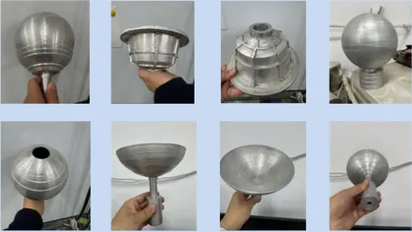

从博士到副教授 从工程师走向技术领导 从学习到管理
增材制造、复合材料与原位监测。
金属增材制造装备、先进储氢安全系统与无人机防除冰系统。
跨越挪威与中国 实验研究、工程任务、技术开发与组建团队和项目管理。
从材料科学到结构健康监测。 如今聚焦增材制造。
增材制造、复合材料耐久性与传感方向的第一作者论文精选。

增材制造装备、储氢与热管理。
亲近自然，探索科研之外的生活。 滑雪、击剑、钓鱼，以及日常生活的点滴。
了解我的工作经历、科研成果与专业背景。